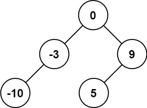
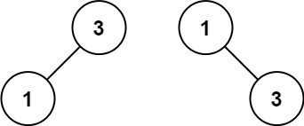

题面
给你一个整数数组 nums ，其中元素已经按 升序 排列，请你将其转换为一棵 平衡 二叉搜索树。
示例 1：

输入： nums = [-10,-3,0,5,9]
输出：[0,-3,9,-10,null,5]
解释：[0,-10,5,null,-3,null,9] 也将被视为正确答案：
示例 2：

输入： nums = [1,3]
输出：[3,1]
解释：[1,null,3] 和 [3,1] 都是高度平衡二叉搜索树。提示：
1 <= nums.length <= 104-104 <= nums[i] <= 104nums按 严格递增 顺序排列
思路
- 前提：只有已排序的数组才能这么做。排好序后取中间元素做根，左边都小、右边都大，天然满足 BST 性质
- 平衡二叉搜索树需满足两个条件：
- BST：对每个节点，左子树所有值 < 当前值 < 右子树所有值
- 平衡：每个节点的左右子树高度差不超过 1
- 做法：每次取中间元素作为根，左半段递归建左子树，右半段递归建右子树。左右两边节点数差不多，自然就平衡了
- 为什么没有单独的"调用"？ 因为这个函数本身就是入口，递归返回的就是最终答案（树的根节点），直接自己调自己就行。不需要像直径那样定义内部函数再手动调用——那是因为直径的递归返回深度，和最终答案（直径）不一样，需要包装
- `left = self.sortedArrayToBST(nums[:m])` 返回的是 TreeNode，不是列表！
nums列表只是输入参数（原材料），函数的返回值永远是TreeNode或None。递归的每一层都把列表"消化"成一个 TreeNode 返回给上层 - 和两数相加一样是正向递归——先把根节点建好，递归结果直接作为参数传入：
TreeNode(nums[m], left, right)，类似ListNode(val, recur(...))
代码实现
class Solution:
def sortedArrayToBST(self, nums: List[int]) -> Optional[TreeNode]:
if not nums:
return
m = len(nums) // 2
left = self.sortedArrayToBST(nums[:m])
right = self.sortedArrayToBST(nums[m + 1:])
return TreeNode(nums[m], left, right)- 复杂度：时间 O(n)，空间 O(log n)（递归调用栈，因为每次对半分）